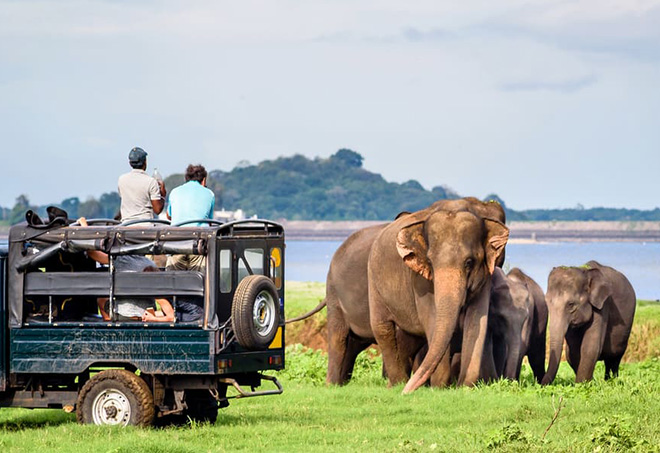

Udawalawa
Udawalawe is a renowned national park located in the southeastern part of Sri Lanka. It is situated approximately 180 kilometers (112 miles) from the capital city, Colombo, making it easily accessible for both locals and tourists alike. The park covers an extensive area of around 308 square kilometers (119 square miles) and is considered one of the most prominent wildlife sanctuaries in the country. Established in 1972, Udawalawe National Park was created with the primary purpose of providing a safe haven for the displaced wildlife due to the construction of the Udawalawe Reservoir. The park's diverse ecosystem features grasslands, scrublands, and patches of dense forests, creating a perfect habitat for a wide variety of flora and fauna. The park is most renowned for its thriving population of Sri Lankan elephants. Observing these majestic creatures in their natural habitat is one of the major highlights of visiting Udawalawe. Tourists often have the opportunity to witness large herds of elephants, including adorable baby elephants, as they roam freely across the vast landscape. Apart from elephants, Udawalawe is home to a diverse range of wildlife, including spotted deer, sambar deer, wild boar, water buffalo, jackals, and even the elusive leopard and sloth bear. The park is also a birdwatcher's paradise, with over 200 bird species recorded, including various eagles, herons, kingfishers, and the endemic Sri Lanka junglefowl. One of the best ways to explore the park and enjoy the wildlife sightings is by embarking on a safari tour. These safaris are usually conducted in sturdy, open-top jeeps, accompanied by knowledgeable guides who provide insights into the park's ecology and its inhabitants. Udawalawe's scenic landscapes and abundant wildlife make it a popular destination for nature enthusiasts, photographers, and wildlife lovers. It offers a unique opportunity to get up close and personal with some of Sri Lanka's most extraordinary animals and immerse oneself in the beauty of its untamed wilderness. The park's commitment to conservation and responsible tourism makes it an ideal destination for eco-conscious travelers seeking a memorable wildlife experience in Sri Lanka.